Choose a template.
Begin with a ready-made structure instead of an empty layout.
Reworking the Book Template experience around the person creating the content.
A review of the existing workflow, followed by a proposed redesign of template selection, chapter editing, styling, and access to advanced tools.
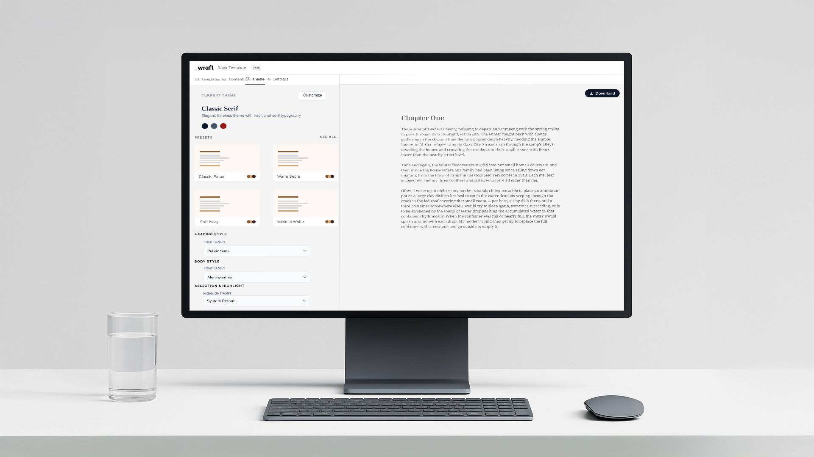
Wraft allows users to generate professionally formatted PDF documents using customizable templates. Its core proposition combines ready-to-use layouts, structured input forms, and PDF export without requiring design skills.
Begin with a ready-made structure instead of an empty layout.
Use structured inputs to put the focus on what the document needs to say.
Turn the content into a professionally formatted PDF.
The Phase 1 product scope includes books, proposals, certificates, formal letters, and wedding cards. This case study focuses on the Book Template, covering the editor, theme settings, settings panel, and import/export proposals.
I reviewed the Book Template workflow to identify ways to simplify the interface and reduce the effort of navigating its tools. These findings are design observations from the audit.
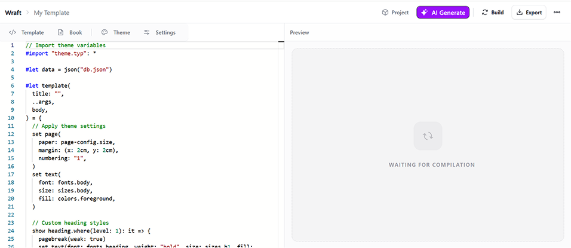
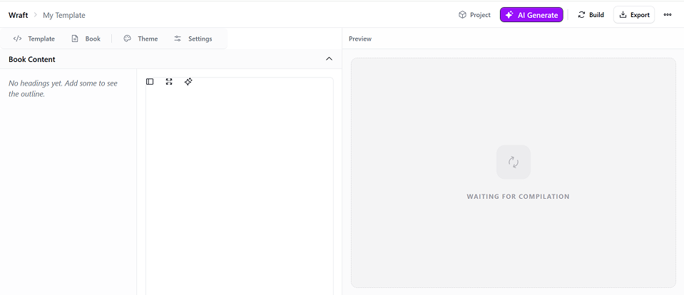
Code is exposed in the template workspace, while the intended user goal is to create a document.
The preview takes a large share of the workspace, leaving less room for the content editor.
Theme presets, colors, and typography require navigation through different settings.
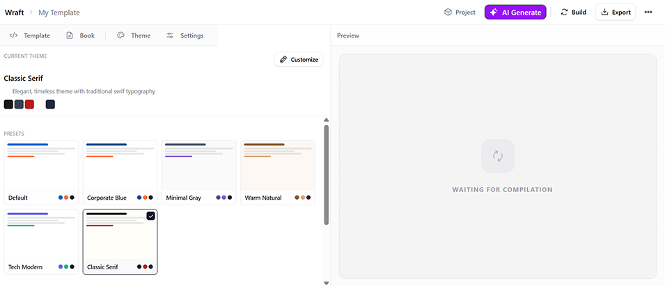
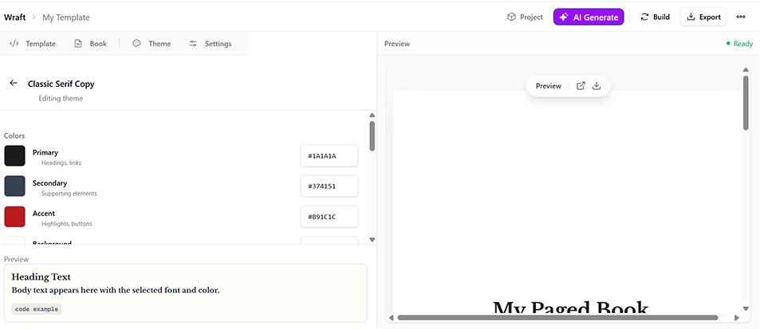
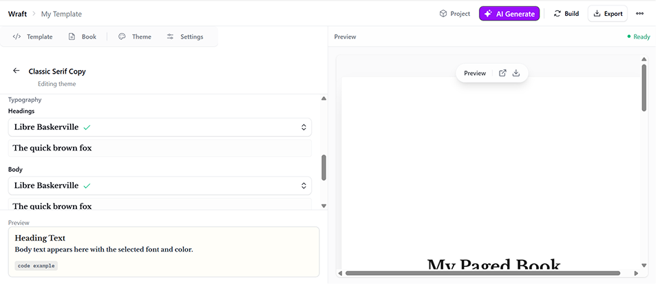
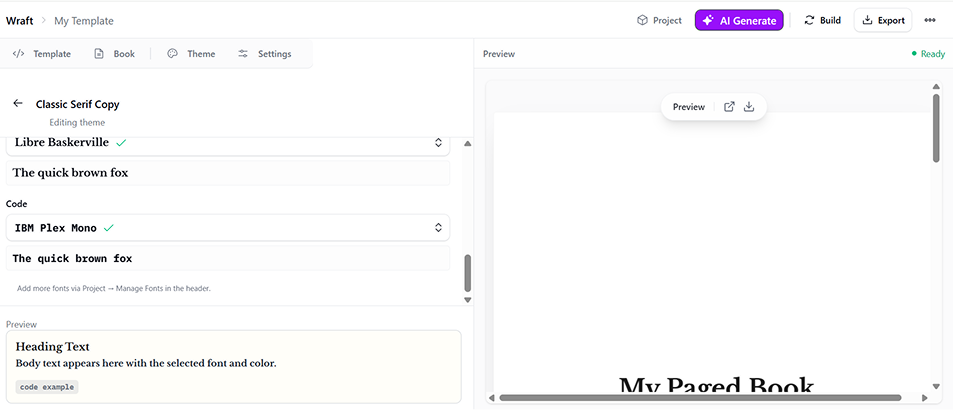
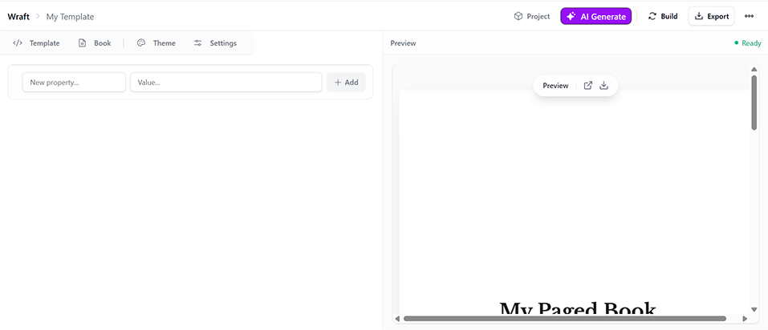
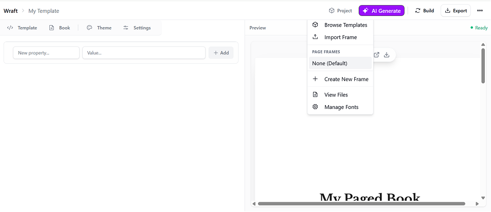
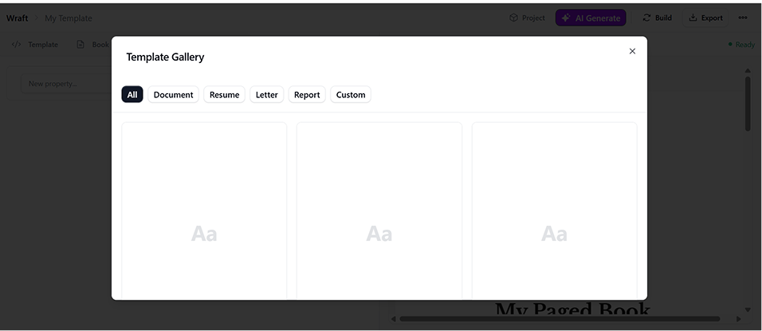
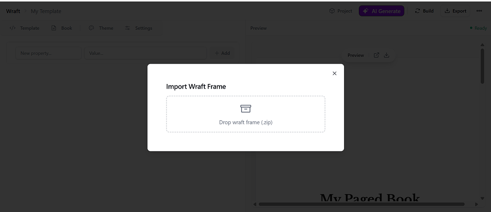
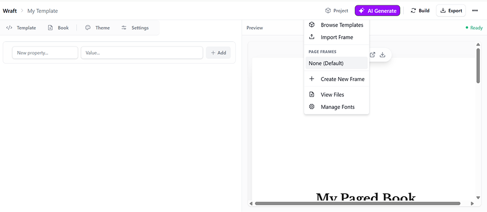
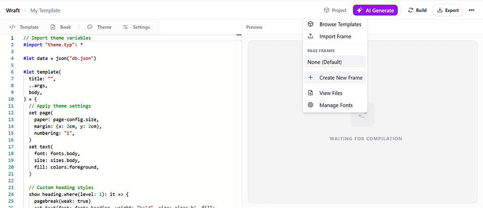
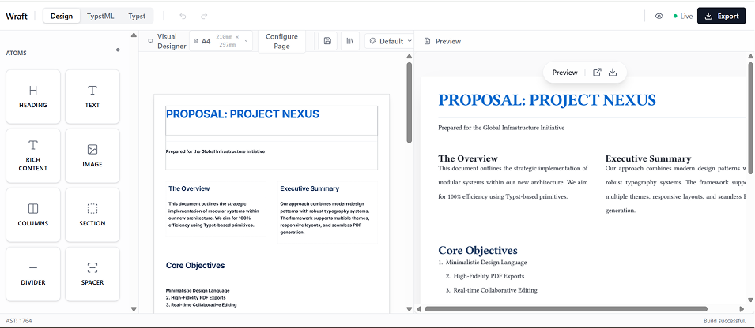
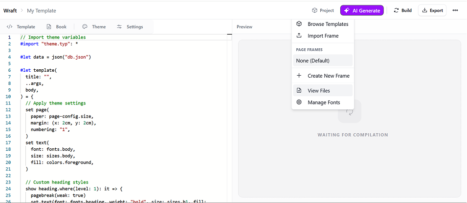
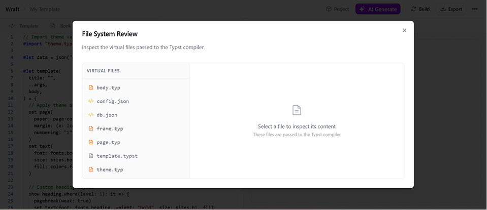
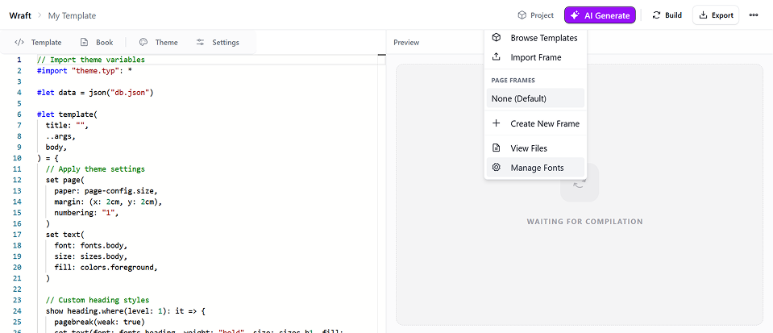
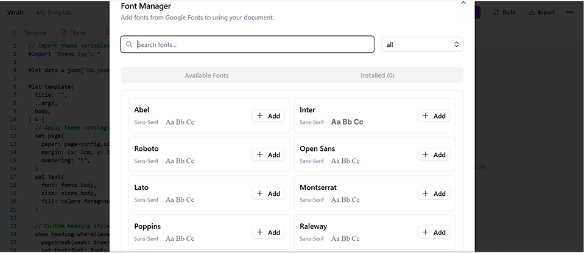
The proposed flow starts with visual templates, gives writing the largest area in the editor, brings key typography controls into the theme view, and separates advanced capabilities from the everyday writing path.
The template screen replaces the code workspace with a grid of book layouts and a document preview. The visual options offer a more direct starting point for choosing a structure.
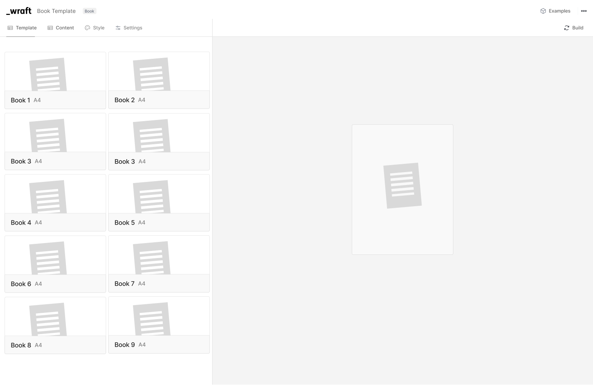
The content screen places chapter navigation on the left, a larger writing area in the center, and a narrower preview on the right. Add chapter is available in the sidebar, and expand icons appear in the editor and preview.
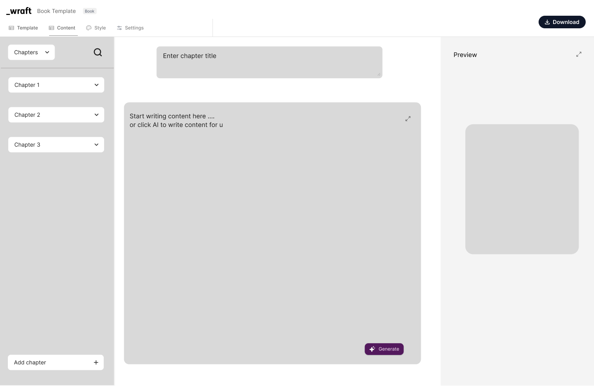
The primary output action is labeled Download. The writing area also includes a Generate control, keeping the AI writing entry point close to the content.
The theme screen shows four visible presets with a See All option. Heading, body, and selection/highlight font controls are available in the same panel, beside the document preview.
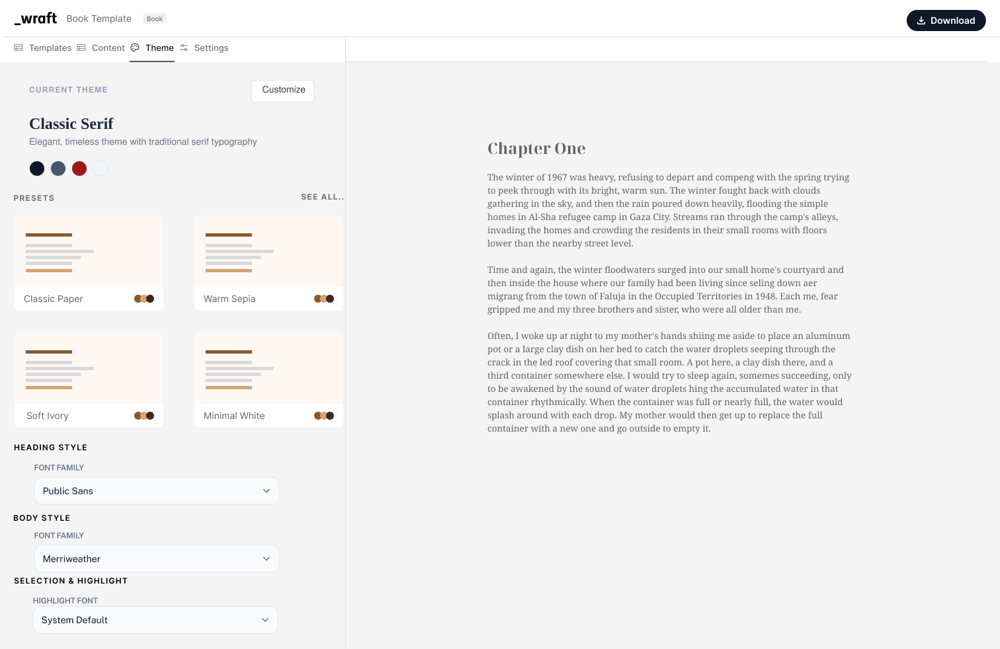
The additional preview screen shows an “Advance Mode” toggle alongside Import, AI Generate, and Export. It also presents chapter navigation within the document preview.
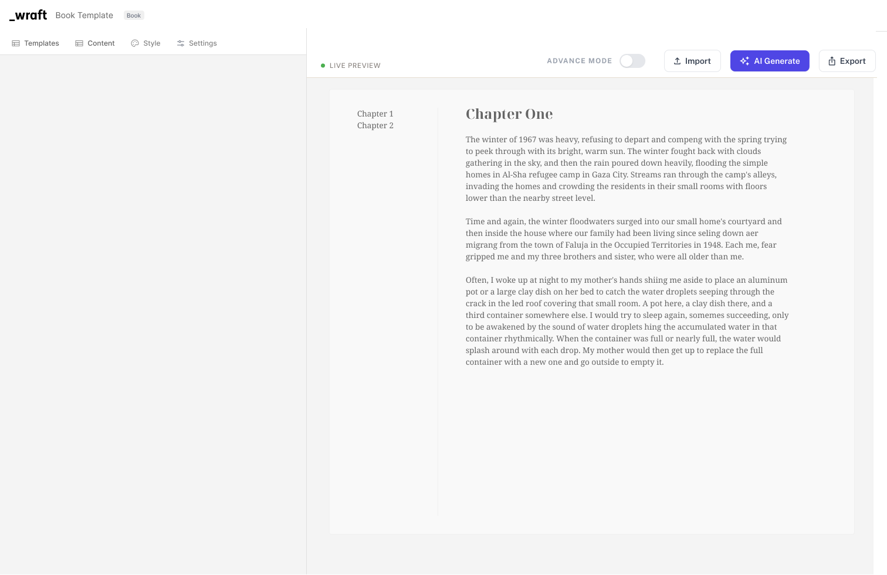
The following capabilities belong to the audit recommendations; their detailed interactions are not shown in the supplied redesign screens.
| Area | Proposed direction |
|---|---|
| Basic vs Advanced | Keep Basic focused on content and Download. Move Project and technical tools into Advanced, with automatic preview updates replacing manual Build in Basic. |
| Settings | Provide access to Code, Build, and Add Variable for advanced workflows. |
| Export formats | Offer PDF, DOCX, HTML, and Typst through advanced export settings. |
| Template imports | Support Wraft templates (.typ), JSON data (.json), and theme files (.typ). |
| Document imports | Explore Word (.docx), Markdown (.md), and CSV (.csv). |
| Integrations | Explore URL/API import and access to a template library. |
Build is still visible on the new template-selection screen, while the editor uses Download. The toggle screen also shows Import and Export beside an apparently inactive switch. The Basic/Advanced visibility rules need to be made consistent across these views.
The navigation uses both “Style” and “Theme” across the proposed screens. A consistent label would make the flow easier to follow.
I would ask first-time users to choose a book template, add chapters, enter content, change typography, preview the result, and download the document. Comparing the previous and proposed workflows would help evaluate whether the redesign reduces navigation effort.
| Success measure | What I would observe |
|---|---|
| Faster document completion | Time required to complete the same book-creation task. |
| Fewer interaction steps | Navigation steps, backtracking, and unnecessary settings visits. |
| Successful task completion | Whether first-time users can finish and download without help. |
| Clearer experience | User feedback on the editor, styling controls, and Basic/Advanced distinction. |
These are proposed evaluation measures. No usability results or measured improvements are reported here.
I became part of Wraft during my apprenticeship at Functionary Labs. The project is still in progress, and this case study captures my contribution to reviewing and refining the Book Template experience so far.
The next step is to validate the proposed improvements, refine the workflow based on feedback, and carry those learnings into the review of other document templates.